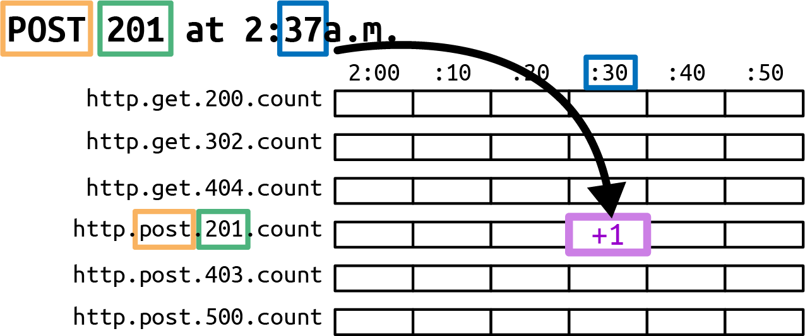
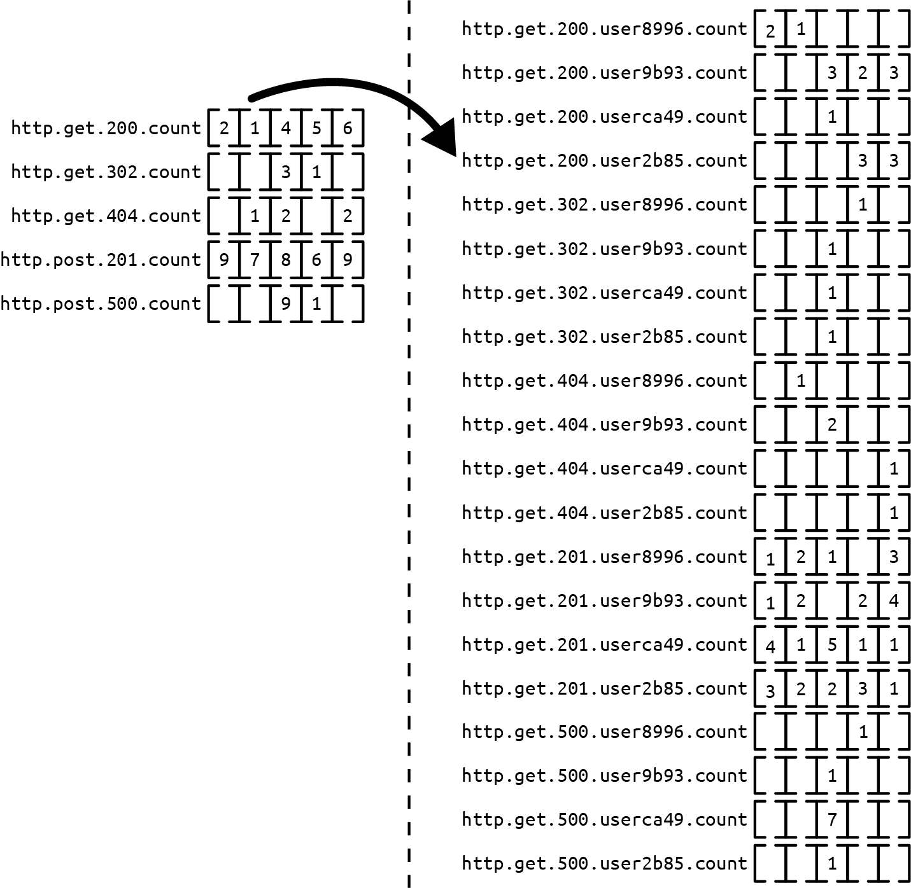
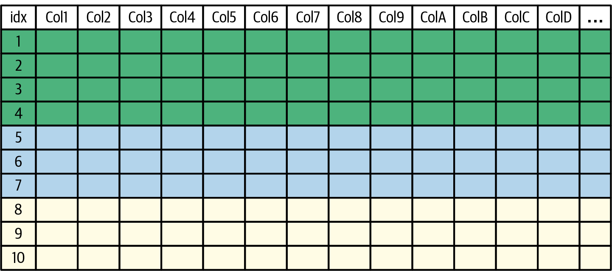
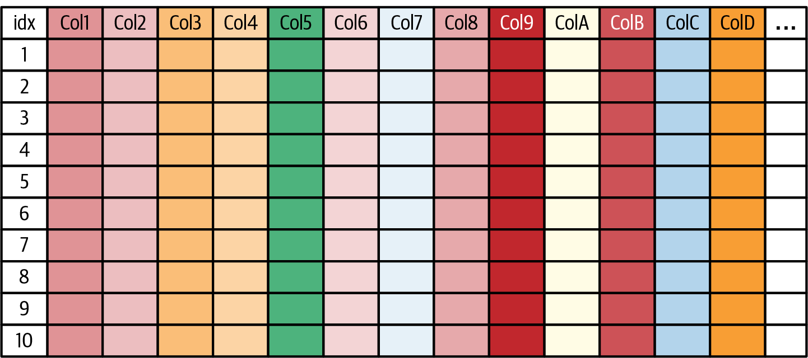
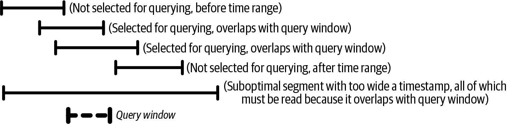
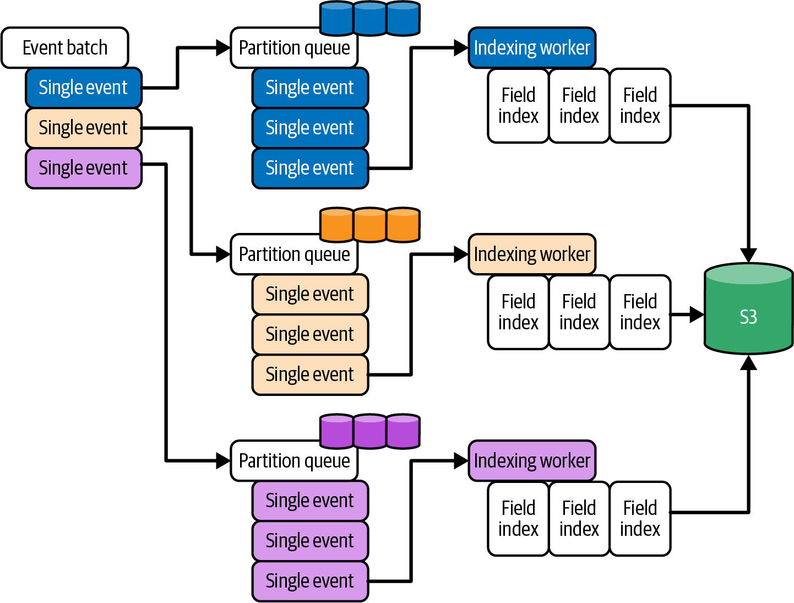

<title>第 13 章　使用 Retriever 進行高效的資料儲存 — 《可觀測性工程》第二版</title>
<link rel="stylesheet" href="style.css">

<nav class="chapnav">
    <a href="ch12.html">← 上一章</a>
    <a href="index.html">目錄</a>
    <a href="ch14.html">下一章 →</a>
  </nav>
<main>
  <header class="masthead">
    <span class="eyebrow">Observability Engineering · Second Edition</span>
    
    <h1 class="title serif">第 13 章<br>使用 Retriever 進行高效的資料儲存</h1>
    <div class="rule"></div>
  </header>

  <p>在本章中，我們將探討當你最需要存取可觀測性資料時，為了有效儲存與檢索該資料所必須解決的挑戰。速度是資料儲存與檢索的常見問題，但在資料層還有其他功能性限制帶來關鍵挑戰，必須加以處理。在規模化的情境下，可觀測性固有的挑戰會變得格外顯著。</p>
<p>我們將先列出實現可觀測性工作流程所需的功能性需求。接著，我們會透過實際案例，檢視欄式資料儲存引擎在現實中的取捨與可能的解決方案，並以Honeycomb 專屬的 Retriever 資料儲存實作為例來說明。在下一章中，你還會學到運用這些概念的另一種應用方式，也就是廣泛部署的開源欄式儲存引擎ClickHouse。</p>
<p>在這兩章中，你將學到在儲存與檢索層必須考量的各種因素，以確保可觀測性資料的速度、可擴展性與持久性。你將了解欄式資料儲存的架構方式、為何它們特別適合用於可觀測性資料、查詢工作負載該如何處理，以及讓資料儲存兼具持久性與高效能所需考量的事項。</p>
<p>在我們著手開發現代可觀測性系統之初，許多人認為若不先將高基數事件資料預先聚合成指標，就不可能大規模儲存這類資料。如今，已經有多種經過驗證、以事件為基礎的方法存在。這兩章所介紹的解決方案，並非你在面對各種取捨時唯一可行的方案。不過，它們是在建構可觀測性解決方案時，用以達成所需成果的真實案例。</p>
<h2 class="section serif">可觀測性的功能性需求</h2>
<p>當你在生產環境中遭遇故障時，每一秒都很重要。針對可觀測性資料的查詢必須盡快回傳結果。如果你送出一個查詢後，還能悠悠哉哉泡一杯咖啡才等到結果回來，那你手上的工具就不適合用於生產環境的救火（參見第 138 頁的〈從第一原理進行除錯〉）。能在幾秒鐘內取得結果，才能讓可觀測性成為一種有用的調查實務，讓你可以快速迭代，直到找出有意義的結果來推進你的調查。</p>
<p>如第 5 章所述，事件是可觀測性的建構元素，而追蹤則是一組相互關聯的事件（或稱追蹤跨度）的集合。要在這些事件中找出有意義的模式，需要具備分析高基數與高維度資料的能力。任何事件（或任何追蹤跨度）中的任何欄位，都必須是可查詢的。這些事件無法預先聚合，因為在進行任何特定調查時，你事先並不知道哪些欄位可能是相關的。所有遙測資料都必須能以完整、未聚合的解析度供查詢，無論其複雜度為何，否則你會冒著調查陷入死胡同的風險。</p>
<p>此外，由於你不知道事件中哪些維度可能是相關的，你就不能讓某個特定維度的資料檢索性能優先於其他維度；它們的速度必須完全相同。因此，所有可能需要用到的資料都必須建立索引（這通常成本高到令人卻步），否則資料檢索就必須在沒有索引的情況下始終保持快速。</p>
<p>在典型的可觀測性工作流程中，用戶想要擷取特定服務在特定時間範圍內的資料。這意味著除了時間維度以及按服務分區之外，資料並不享有特殊待遇。查詢必須能夠回傳特定時間區間內記錄的所有資料，因此你必須確保這些資料有適當的索引。時間序列資料庫（TSDB）在這裡似乎是顯而易見的選擇，但正如本章稍後會看到的，若將其用於統一的可觀測性，會帶來一系列彼此不相容的限制。</p>
<p>由於可觀測性資料是用來除錯生產環境的問題，因此得知你所採取的具體行動是否已經解決問題至關重要。過時的資料會讓工程師浪費時間追逐錯誤線索，或對系統目前的狀態做出錯誤的結論。因此，一個有效的可觀測性系統不應只包含歷史資料，還必須包含能以接近即時的方式反映當前狀態的新鮮資料。從系統接收資料到讓該資料可供查詢之間，經過的時間不應超過幾秒鐘。</p>
<p>最後，該資料儲存也必須具備持久性與可靠性。在關鍵調查過程中所需的可觀測性資料，絕不能遺失；也不能因為資料儲存中任一元件失效，就延誤關鍵調查工作。你用來檢索資料的任何機制，都必須具備容錯能力，並設計成即使底層某些工作節點故障，仍能快速回傳查詢結果。資料儲存的持久性也必須能承受自身基礎架構內部所發生的故障。否則，當你試圖除錯生產環境服務為何無法運作時，追蹤該服務的可觀測性解決方案本身也可能一併失效。</p>
<p>既然這些功能性需求是實現即時除錯工作流程所必需的，傳統的資料儲存解決方案在高可觀測性系統中往往力有未逮。在規模夠小的情況下，這些參數內的資料性能較容易達成。在本章中，我們將探討當你的儲存方案超越單一節點時，這些問題會如何浮現。</p>
<h2 class="section serif">時間序列資料庫不足以支撐統一的可觀測性</h2>
<p>在核心上，統一模型中的可觀測性資料是由代表程式執行資訊的結構化事件所組成。如第 5 章所述，這些結構化事件本質上是鍵值對的集合。在追蹤的情況下，這些結構化事件彼此可以建立關聯，以視覺化呈現追蹤跨度之間的親子關係。如同第 4 章所見自動檢測的使用案例，其中某些欄位可能是「已知的」（或可預測的）。然而，最有價值的資料通常是你特定應用程式所獨有的自訂資料。這類自訂資料通常是臨時產生的，也就是說，用於儲存它的綱要（schema）往往是動態或具彈性的。</p>
<p>如第 5 章所述，時間序列資料（指標）會將系統性能彙總成簡單的度量值。指標會將特定時間窗口內所有底層事件彙總成一個簡單且可分解的數字，並附帶一組相關標籤。這樣做可以減少傳送到遙測後端資料儲存的資料量，並改善查詢性能，但也限制了日後能從該資料中得出的答案數量。雖然某些指標資料結構（例如用來產生直方圖的結構）可能稍微複雜一些，但它們本質上仍是將相近的數值範圍歸類在一起，並記錄具有相似數值的事件計數（見圖 13‑1）。</p>
<figure class="plate">
<figcaption>圖 13‑1。一個典型的 TSDB，展示有限的基數與維度，帶有 HTTP method與 status code 標籤，並依時間戳記分桶。</figcaption></figure>
<p>傳統上，時間序列資料庫（time‑series database, TSDB）用於儲存聚合後的指標。時間序列資料儲存機制旨在透過確保聚合與標籤的新組合很少出現，來分攤額外流量的成本；為每個唯一時間序列建立一筆記錄（或資料庫行）會產生較高的開銷，但對已存在的時間序列附加一個數值型量測值，成本則極低。</p>
<p>在查詢端，TSDB 主要的資源成本在於找出符合特定運算式的時間序列；掃描結果集本身成本不高，因為數百萬個事件可以被縮減成少量依時間窗口分組的計數。複雜度會隨著被過濾的時間序列數量與被檢視的桶數增加而提升，但不會隨每個桶內的事件數量增加。</p>
<p>在理想情況下，你應該可以直接改用同一個 TSDB 來記錄結構化事件。然而，可觀測性在功能上要求能在高基數與高維度資料中呈現有意義的模式，這使得使用 TSDB 變得不切實際。雖然你可以把每個維度轉成標籤名稱、每個值轉成該標籤的值，但這會為每個唯一的標籤值組合建立一個新的時間序列（見圖13‑2）。</p>
<p>只有在相同標籤被重複使用並頻繁遞增的情況下，建立新時間序列的成本才會在各次量測間被分攤至零。但每個結構化事件通常都是獨一無二的，這會導致建立資料行的開銷與收到的事件數量呈線性關係。每一筆這樣的資料行只會收到單一事件，之後所有後續時間區段都不會再有值。這種基數爆炸的問題，使得 TSDB 不適合用來儲存結構化事件。我們需要一個不同的解決方案。</p>
<figure class="plate">
<figcaption>圖 13‑2　當高基數索引 userid 被加入後，同一個 TSDB 爆炸的情況。</figcaption></figure>
<h2 class="section serif">其他可能的資料儲存</h2>
<p>乍看之下，儲存結構化的鍵值對集合，似乎和其他可以透過通用 NoSQL 資料庫（如 MongoDB 或 CockroachDB）處理的工作負載類似。然而，雖然事件遙測資料的匯入（即事件擷取）很適合這類資料庫，但因為可觀測性的功能性需求，這類資料的匯出模式（即事件查詢）與傳統工作負載有著顯著的差異。</p>
<p>這種迭代分析方法（在第 8 章中描述）需要能夠同時理解一個以上的維度，不論可能的維度數量有多少</p>
<p>各維度所包含的值。換句話說，你必須能夠對具有任意維度與基數的資料進行查詢。</p>
<p>NoSQL 資料庫在處理這類任意查詢時可能會很慢，除非查詢僅使用已經建立索引的特定欄位。但預先建立索引無法讓你任意切分資料；你只能一次沿著單一維度切分，而且只適用於你事先記得要建立索引或預先聚合的維度。此外，如果每個值都是唯一的，它在索引中所佔的空間會與原始表格中一樣多，導致如果我們為每個欄位都建立索引，索引集合會比原始資料還要大。因此試圖調校 NoSQL 資料庫來優化其查詢是行不通的。如果我們不是試圖讓一部分查詢變快，而是試著讓所有查詢都能在合理的時間內完成，會如何呢？</p>
<p>在 Facebook，Scuba 系統透過消耗大量 RAM 以支援全表存取，有效解決了即時可觀測性查詢的問題。1 然而，這也帶來一項效能取捨：使用系統記憶體作為儲存以加速查詢。這項實作決策使得 Scuba 在經濟上難以推廣到Facebook 以外的組織採用。截至本書第二版出版時，1 TB（terabyte）RAM的成本約為 5,000 美元，而 1 TB SSD 的成本則不到 50 美元。若嘗試將Scuba 用作資料儲存，組織將受限於 RAM 中可用的資料量來進行查詢。對於大多數具有一定規模基礎設施的大型組織而言，這項限制會將可查詢遙測資料的時間窗口壓縮到幾分鐘，而非幾小時或幾天。</p>
<p>或許我們可以參考其他用於儲存包含大量屬性的結構化事件形狀資料的資料儲存——也就是追蹤解決方案所使用的遙測後端。在我們撰寫本書第一版時，市面上已有一些大規模儲存引擎的開源實作，大多數與 Jaeger 追蹤前端可互通：Apache Cassandra、Elasticsearch、OpenSearch、ScyllaDB 與InfluxDB。這些系統能夠使用某種綱要來擷取並持久儲存追蹤資料，但它們並非專門為追蹤而特別打造的。</p>
<p>Grafana Tempo 是一個較新的實作範例，專為追蹤而生。然而，如同我們將在本章中看到的，就其 v2 架構而言，它並不一定符合統一可觀測性資料所需的功能性查詢需求。Observe Inc. 則是在 Snowflake 之上建構了一套專有解決方案，這對資料倉儲來說非常出色，但對互動式調查而言就沒那麼理想了。整體來說，更重要的是，到目前為止提到的解決方案都不是為了管理各種遙測訊號資料型別而打造的。</p>
<p class="fn">1 Lior Abraham et al., “Scuba: Diving into Data at Facebook,” Proceedings of the VLDB Endowment 6, no. 11 (2013): 1057–1067.</p>
<p>在撰寫這第二版時，ClickHouse 已成為許多組織在建立自身可觀測性堆疊時所使用的實質標準開源元件，也是新一代供應商將開源 OTel 標準與開源後端結合的基礎。你將在下一章直接從 ClickHouse 團隊那裡了解其資料儲存設計。</p>
<p>現在，讓我們來檢視儲存與查詢追蹤資料的技術需求，以便解決方案能滿足可觀測性的功能需求。雖然理論上任何做法都是可行的，但本章將探討如何儲存事件資料，並透過大規模聚合事件來獲得洞察，這是僅檢視個別追蹤所無法達到的。</p>
<h2 class="section serif">資料儲存策略</h2>
<p>從概念上來說，結構化事件與其所代表的追蹤跨度可以視為一個由行與列組成的表格。儲存表格可以使用兩種策略：行儲存與欄位儲存。在可觀測性領域中，行對應到個別的遙測事件，而欄位則對應到這些事件的欄位或屬性。</p>
<p>在行儲存中，每一行資料會被保存在一起（如圖 13‑3 所示），假設整行資料會一次被取出。在欄位儲存中，資料的欄位會被保存在一起，與其所屬的行分離。每種方法各有取捨。為了說明這些取捨，我們將以歷經時間考驗的Dremel、ColumnIO 與 Bigtable 作為更廣泛的運算與儲存模型範例，而非聚焦於當今實務上使用的特定開源遙測儲存系統。事實上，Dapper 追蹤系統最初就是建立在 Bigtable 資料儲存之上。</p>
<figure class="plate">
<figcaption>圖 13‑3。行儲存示意圖，顯示連續的行如何以分片方式保存在一起，作為單一單位（tablet）進行查找與擷取。</figcaption></figure>
<p>Bigtable 採用基於行的方式，這代表個別追蹤與跨度的檢索速度很快，因為資料經過序列化，且主鍵已建立索引（例如依時間）。要取得一行（或掃描幾個連續的行），Bigtable 伺服器只需要檢索一組檔案及其中繼資料（稱為tablet）。為了讓追蹤功能有效運作，這種方式要求 Bigtable 維護一份依主要行鍵（例如追蹤 ID 或時間）排序的行清單。若行鍵未依嚴格順序抵達，伺服器就必須將其插入適當位置，這會在寫入時額外產生排序插入的工作，而這對非循序的讀取工作負載來說是不需要的。</p>
<p>作為一種可變的資料儲存，Bigtable 支援更新與刪除語意，以及動態重新分割。換句話說，Bigtable 中的資料在資料處理上具有彈性，但代價是複雜度與性能上的犧牲。Bigtable 會暫時以記憶體內的異動日誌，加上一疊持續累積、內含鍵值對的覆蓋層檔案來管理資料的更新，這些覆蓋層檔案會覆寫堆疊中較底層所設定的值。當這類更新累積到一定數量時，就必須定期將覆蓋層檔案「壓實」回一個不可變的基底層，這個過程會依優先順序重寫記錄。這個壓實過程在磁碟輸入╱輸出（I/O）操作方面的成本相當高昂。</p>
<p>對於可觀測性工作負載而言——這種工作負載實際上是一次寫入、多次讀取——壓實過程帶來了性能上的兩難。由於新擷取的可觀測性資料必須在幾秒內即可供查詢，若使用 Bigtable，壓實過程要嘛得持續不斷地運行，要嘛就得在每次送出查詢時，讀遍每一層堆疊的不可變鍵值對。要在不讀取整個行所屬tablet 的所有欄位的情況下，重建相關欄位與值以對任意欄位進行分析，這是不切實際的。同樣地，要求每次寫入後都執行壓實也不切實際。</p>
<p>Bigtable 可選擇性地讓你針對某個欄位族（column family）中的一組欄位設定局部性群組（locality group），使其能與其他欄位族分開儲存。但即使只是檢視局部性群組中單一欄位的資料，仍需要讀取整個局部性群組——同時捨棄大部分資料，拖慢查詢速度，並浪費 CPU 與 I/O 資源。你可以在選定的欄位上加上索引，或依預期的存取模式拆分局部性群組，但這種變通做法與可觀測性所要求的任意存取相互牴觸。局部性群組欄位中的稀疏資料在Bigtable 中成本不高，因為欄位只存在於該局部性群組內。但就整體而言，局部性群組不應該是空的，因為它們本身就有額外開銷。</p>
<p>若將這種做法推到極限——為每個欄位都加上索引，或將每個欄位都儲存在各自獨立的局部性群組中——成本就會不斷累加。2 值得注意的是，Google Dapper 後端論文中提到，僅嘗試在 Bigtable 中為三個欄位（service、host與 timestamp）建立索引，供 Dapper Depots 使用，所產生的資料就已經</p>
<p class="fn">2 “Schema Design Best Practices”，Google Cloud Bigtable，存取於 2026 年 4月 10 日。</p>
<p>76% 的體積，幾乎與追蹤資料本身一樣大。3 因此，如果能完全消除索引的需求，就能找到一種更實用的方法來儲存分散式追蹤。</p>
<p>獨立於像 Bigtable 這樣的策略之外，使用以欄位為基礎的方法時，可以快速檢視所需的資料子集。傳入的資料會被分割成多個欄位（如圖 13‑4 所示），並以一個合成的 id 欄位作為每一行的主鍵。每個欄位檔案都會單獨儲存從主鍵到該欄位值的對應關係。因此，你可以獨立地查詢並存取每個欄位的資料。</p>
<p>然而，純粹以欄位為基礎的方法並不能保證任一行的資料會以任何特定順序儲存。要存取某一行的資料，你可能需要掃描任意數量的資料，甚至是整個資料表。Dremel 與 ColumnIO 儲存模型試圖透過手動粗粒度分片（例如為tablename.20250820、tablename.20250821 等建立各自獨立的資料表）來解決此問題，並將在查詢時識別並合併這些資料表的工作留給使用者。當資料量龐大時，這變得極難管理；分片要不是變得過大而難以有效查詢，就是被切割成數量極多的小分片（tablename.20250820‑000123），讓人很難建構出使用正確分片的查詢。</p>
<figure class="plate">
<figcaption>圖 13‑4。欄位儲存示意圖，顯示資料依欄位而非依行分解，每組欄位可獨立存取，但若要做完整的行掃描，就必須拉取每一個欄位檔案。</figcaption></figure>
<p>純粹以行為基礎或純粹以欄位為基礎的方法，都無法完全滿足可觀測性的功能需求。為了解決兩者的取捨</p>
<p class="fn">3 Benjamin H. Sigelman et al.，《Dapper, a Large‑Scale Distributed Systems Tracing Infrastructure》，Google 技術報告，2010 年 4 月。</p>
<p>在行儲存與欄位儲存之間，混合式方法——結合兩者優點——能滿足可觀測性所需的追蹤工作負載類型。混合式方法能讓你有效率地對行與欄位都執行部分掃描。請記住，對可觀測性工作負載而言，查詢結果快速回傳，比結果詳盡完整更為重要。</p>
<p>為了說明如何在實務上達成這種平衡，我們將檢視 Honeycomb 儲存引擎的架構，它代表了達成這些功能需求的一種方式。</p>
<h2 class="section serif">案例研究：Retriever 的實作</h2>
<p>在這一節中，我們將說明 Honeycomb 欄位式資料儲存（又稱 Retriever）的實作，藉此展示你可以如何用類似的設計滿足可觀測性的功能需求。我們希望藉由具體的實作與運作面向的取捨，呈現出在抽象理論模型的討論中看不到的內容，讓你能比較我們的實作與其他可用方案的異同。在下一章，你也會了解ClickHouse 在其設計中做了哪些取捨。</p>
<h2 class="section serif">依時間對資料進行分區</h2>
<p>先前我們討論行儲存與欄位儲存的挑戰時，曾建議一種混合方法，也就是透過以時間戳記進行分區來縮小搜尋範圍。然而，分散式系統中的時間永遠不可能完全一致，而且追蹤跨度的時間戳記可能是該跨度的開始時間而非結束時間，這意味著資料可能會比目前時間晚幾秒甚至幾分鐘才抵達。若要把記錄插入已經寫入磁碟的位元組中間，並不合理，因為這麼做會產生重寫資料的成本。那麼，面對資料抵達順序錯亂的情況，究竟該如何進行分區，才能既有效率又可行？</p>
<p>你可以做的一項優化，是假設事件很可能會在接近其實際產生時的時間戳記附近抵達，並且可以在讀取時修正順序錯亂抵達的問題。這樣一來，你就能繼續把儲存傳入資料的檔案視為僅供附加寫入（append‑only），這大幅簡化了寫入時的額外負擔。</p>
<p>使用 Retriever 時，某租戶新到達的追蹤跨度會被插入到該租戶目前使用中的儲存檔案集合（segment）末端。為了能在讀取時查詢到正確的 segment，Retriever 會追蹤目前 segment 中最舊與最新的事件時間戳記（藉此建立一個可能與其他 segment 時間窗重疊的區間）。Segment 終究需要結束並定案，因此你應該選擇適當的閾值。舉例來說，當經過一小時後，</p>
<p>當寫入超過 250,000 筆記錄，或已寫入超過 1 GB（gigabyte）時，Retriever會將目前的段落定案為唯讀，並在中繼資料中記錄該段落最早與最新的時間戳記。</p>
<p>如果你採用了這種窗口式段落模式，在讀取時就能運用各段落的時間戳記窗口中繼資料，只擷取包含你想執行之查詢的相關時間戳記與租戶資料集的段落（如圖 13‑5 所示）。通常，可觀測性工作負載在執行查詢時會尋找特定時間範圍內的資料（例如「現在到兩小時前」，或「2025‑08‑20 00:01 UTC 到2025‑09‑20 23:59 UTC」）。任何其他時間範圍對該查詢而言都是多餘的，透過這種實作方式，你不需要檢視與查詢時間沒有重疊的無關段落資料。</p>
<figure class="plate">
<figcaption>圖 13‑5。被選中進行查詢的段落，是那些至少部分與查詢窗口重疊的段落；在查詢窗口之前或之後便已開始並結束的段落，則會被排除在分析之外。</figcaption></figure>
<p>這種依時間劃分段落的做法有兩項優點：</p>
<p>1. 個別事件不需要依照事件時間戳記嚴格排序，只要每個段落的起始與結束時間戳記都以中繼資料的形式儲存，且事件到達時具有一致的延遲即可。</p>
<p>2. 每個區段的內容都是僅供附加的產物，一旦如 2. 所述完成後即可凍結，而不需要作為可變的覆蓋層/圖層來建置並定期壓實。</p>
<p>區段分割方法有一個潛在弱點：當回填資料與當前資料混雜在一起時（例如，某個批次工作完成並回報數小時或數天前的時間戳記），每個寫入的區段的中繼資料都會顯示其跨越一個廣泛的時間窗口，不僅涵蓋數分鐘，還可能涵蓋數小時或數天的時間。</p>
<p>在這種情況下，該廣泛窗口內的任何查詢都需要掃描這些區段，而不是只掃描兩個較窄時間窗口（當前時間，以及回填事件發生前後的時間）內的資料。儘管 Retriever 工作負載至今尚未需要這樣做，你仍可以疊加更多</p>
<p>如果這成為重大問題，可以使用複雜的區段分割機制（或事後重寫與壓縮機制）。</p>
<h2 class="section serif">在區段內按欄位儲存資料</h2>
<p>如同先前概述的純 Dremel 風格欄位儲存方法，在時間因素被排除之後，分解資料的下一個合理方式，是將事件拆解成其組成欄位，並將每個欄位的內容與其他事件中相同欄位出現的其他值一起儲存。這會使磁碟上的配置變成：每個區段中每個欄位對應一個只能附加寫入的檔案，再加上一個特殊的時間戳記索引欄位（因為每個事件都必須有時間戳記）。當事件到達時，你可以針對它們所引用的欄位，在目前作用中的區段裡，將一筆條目附加到對應的檔案中。</p>
<p>如上一節所述，完成依區段時間戳記的過濾之後，即可在查詢時只存取相關欄位對應的檔案，藉此限縮所需存取的資料量，做法是存取各欄位自身的檔案。為了能夠重建原始資料列，每一列都會被指派一個時間戳記，以及在該區段中的相對序號。每個欄位檔案在磁碟上都是一個陣列，內容為「序號後面接著該欄位的值」，並針對區段中的每一列重複此結構。</p>
<p>舉例來說，這份原始資料列集合（我們假設它是依到達時間排序的）可能會被轉換成如下形式：</p>
<pre class="code">Row <span class="tok-number">0</span>: { <span class="tok-string">"timestamp"</span>: <span class="tok-string">"2025-08-20 01:31:20.123456"</span>,
 <span class="tok-string">"trace.trace_id"</span>: <span class="tok-string">"efb8d934-c099-426e-b160-1145a87147e2"</span>, <span class="tok-string">"field1"</span>: <span class="tok-keyword">null</span>, ... }
Row <span class="tok-number">1</span>: { <span class="tok-string">"timestamp"</span>: <span class="tok-string">"2025-08-20 01:30:32.123456"</span>,
 <span class="tok-string">"trace.trace_id"</span>: <span class="tok-string">"562eb967-9171-424f-9d89-046f019b4324"</span>, <span class="tok-string">"field1"</span>: <span class="tok-string">"foo"</span>, ... }
Row <span class="tok-number">2</span>: { <span class="tok-string">"timestamp"</span>: <span class="tok-string">"2025-08-20 01:31:21.456789"</span>,
 <span class="tok-string">"trace.trace_id"</span>: <span class="tok-string">"178cdf06-dbc5-4c0d-b6b7-5383218e1f6d"</span>, <span class="tok-string">"field1"</span>: <span class="tok-string">"foo"</span>, ... }
Row <span class="tok-number">3</span>: { <span class="tok-string">"timestamp"</span>: <span class="tok-string">"2025-08-20 01:31:21.901234"</span>,
 <span class="tok-string">"trace.trace_id"</span>: <span class="tok-string">"178cdf06-dbc5-4c0d-b6b7-5383218e1f6d"</span>, <span class="tok-string">"field1"</span>: <span class="tok-string">"bar"</span>, ... }
Timestamp index file
idx value
<span class="tok-number">0</span> <span class="tok-string">"2025-08-20 01:31:20.123456"</span>
<span class="tok-number">1</span> <span class="tok-string">"2025-08-20 01:30:32.123456"</span> (note: timestamps do <span class="tok-keyword">not</span> need to be chronological)
<span class="tok-number">2</span> <span class="tok-string">"2025-08-20 01:31:21.456789"</span>
<span class="tok-number">3</span> <span class="tok-string">"2025-08-20 01:31:21.901234"</span>
[...]
Raw segment column file <span class="tok-keyword">for</span> column `field1`
(note there <span class="tok-keyword">is</span> neither a row index nor value <span class="tok-keyword">for</span> missing/<span class="tok-keyword">null</span> values of a column)
idx value
<span class="tok-number">1</span> <span class="tok-string">"foo"</span>
<span class="tok-number">2</span> <span class="tok-string">"foo"</span>
<span class="tok-number">3</span> <span class="tok-string">"bar"</span>
[...]</pre>
<p>由於欄位傾向於為 null 或包含先前已出現過的重複值，你可以使用基於字典的壓縮、稀疏編碼或行程長度編碼（run‑length encoding）來減少序列化整個欄位時各值所佔用的空間。4 利用已完成欄位的相關知識來壓實資料，可縮小其在磁碟上的大小。這對後端有兩方面的好處：一是必須分層儲存到後端儲存體的資料量，二是擷取與掃描該資料所需的時間。</p>
<pre class="code">compacted timestamp index file:
[<span class="tok-string">"2025-08-20 01:31:20.123456"</span>,
 <span class="tok-string">"2025-08-20 01:30:32.123456"</span>,
 <span class="tok-string">"2025-08-20 01:31:21.456789"</span>,
 <span class="tok-string">"2025-08-20 01:31:21.901234"</span>,
 ...]
compacted segment column file, <span class="tok-keyword">with</span> dictionary, <span class="tok-keyword">for</span> column `example`
dictionary: {
  <span class="tok-number">1</span>: <span class="tok-string">"foo"</span>,
  <span class="tok-number">2</span>: <span class="tok-string">"bar"</span>,
  ...
}
presence:
[Bitmask indicating which rows have non-<span class="tok-keyword">null</span> values]
data <span class="tok-keyword">from</span> non-<span class="tok-keyword">null</span> row indexes:
[<span class="tok-number">1</span>, <span class="tok-number">1</span>, <span class="tok-number">2</span>, ...]</pre>
<p>根據其分布情況，數值與時間戳記資料也特別適合套用數值壓縮技術，例如差量編碼（delta encoding）、將整數位移以消除尾端零，以及將浮點數的指數與尾數分離。以十六進位字串編碼表示的追蹤與跨度 ID，可以強制轉換為整數，這代表了終極的高基數資料，因為任何跨度或追蹤 ID 都不應發生碰撞。對於布林值，roaring bitmap 可能是一種有效率的儲存格式。而某些數值資料可能具有足夠的重複性或類似枚舉的特性，使得字典比其他任何格式都更有效率。</p>
<p>一旦某個欄位經過壓縮，其資料被編碼成更利於壓縮的形式，該欄位（或整個區段，也就是由一組欄位檔案所組成的集合）接著會以標準演算法（例如 LZ4）再次壓縮，以進一步縮小其歸檔時所佔用的空間。由於 Retriever 已將大部分的運算成本推遲到讀取時才發生，因此解壓縮速度比壓縮率更為重要。</p>
<p class="fn">4 Terry Welch，〈A Technique for High‑Performance Data Compression〉，《Computer》17 卷第6 期（1984 年）：8–19。</p>
<p>在欄位儲存中，建立與追蹤一個欄位的成本會分攤到寫入該欄位的所有值上；其在指標領域的對應概念是行（row）或標籤集，其成本會分攤到所有值上。因此，只要偶爾可能出現非空值，建立新欄位就是高效的做法；但若只建立僅有一行、只寫入一次非空值的一次性欄位，則效能不佳。</p>
<p>實務上，這代表你在撰寫程式碼時，不需要手動擔心為跨度與事件加入新的屬性或鍵名。然而，你不會希望以程式化方式建立一個名為timestamp_2025061712345 的欄位，只寫入一次 true 之後便不再使用；相反地，應該以 timestamp 作為欄位值，2025061712345 作為鍵值。你永遠可以根據既有資料定義臨時的聚合或虛擬欄位，而不必將資料永久重複儲存於磁碟上。</p>
<h2 class="section serif">執行查詢工作負載</h2>
<p>以類似 Retriever 設計的欄位儲存來執行查詢，包含以下六個步驟：</p>
<p>1. 使用查詢的起訖時間，以及每個合格分段（segment）的起訖時間，識別出所有可能與該查詢時間範圍重疊的分段。</p>
<p>2. 在每個相符的區段中，針對查詢過濾條件（例如 WHERE）所使用或輸出（例如作為 SELECT 或 GROUP）所使用的欄位，只掃描查詢中有參照到的相關欄位檔案。進行掃描時，追蹤目前所處理的偏移量。先評估該偏移量所在列的時間戳記，以驗證該列是否落在查詢的時間範圍內。若不在範圍內，則前進到下一個偏移量並重新嘗試。</p>
<p>3. 對於落在時間範圍內的列，針對每個作為輸入或輸出的欄位，掃描該偏移量的值，並在輸入過濾條件相符時，將輸出值輸出到重建後的列中。每處理完一列後，將所有已開啟的欄位檔案的偏移量遞增至下一列。個別列可以邊處理邊捨棄，將 RAM 中保留的資料量降到最低，只需保留單一數值，而不需保留該區段中該欄位的整個檔案內容。</p>
<p>請注意，當原始時間範圍內需要細分子時間窗口時（例如針對過去兩小時的資料，回報 24 個五分鐘的時間窗口），會隱含地以時間戳記進行GROUP。</p>
<p>4. 在區段內進行彙總。針對每個 GROUP，合併步驟 3 所選出的值。舉例來說，COUNT 只是統計每個 GROUP 值相符的列數，而 SUM(example) 則可能將每個 GROUP 值中識別出的欄位 example 的所有數值加總。每個區段分析完成後，即可釋放其檔案控制代碼。</p>
<p>5. 將結果傳送給每個 GROUP 對應的單一 worker，以跨區段彙整。5. 合併每個 GROUP 在各區段內的彙整值，並針對該時間範圍將其彙整為單一值（或依時間粒度分桶的一組值）。</p>
<p>6. 排序各群組，並選出前 K 個群組納入圖表。應使用 K 的預設值，避免傳輸數千個符合條件的群組作為完整結果集，除非使用者要求如此。</p>
<p>我們可以在此以虛擬碼進行說明，根據累計總和或至今所見的最高值來計算SUM、COUNT、AVG、MAX 等——例如，針對欄位 x 依欄位 a 和 b 分組後的值，其中 y 大於零：</p>
<pre class="code">groups := make(map[Key]Aggregation)
<span class="tok-keyword">for</span> _, s := range segments {
  <span class="tok-keyword">for</span> _, row := range fieldSubset(s, []string{<span class="tok-string">"a"</span>, <span class="tok-string">"b"</span>, <span class="tok-string">"x"</span>, <span class="tok-string">"y"</span>}))
    <span class="tok-keyword">if</span> row[<span class="tok-string">"y"</span>] &lt;= <span class="tok-number">0</span> {
      <span class="tok-keyword">continue</span>
    }
    key := Key{A: row[<span class="tok-string">"a"</span>], B: row[<span class="tok-string">"b"</span>]}
    aggr := groups[key]
    aggr.Count++
    aggr.Sum += row[<span class="tok-string">"x"</span>]
    <span class="tok-keyword">if</span> aggr.Max &lt; row[<span class="tok-string">"x"</span>] {
      aggr.Max = row[<span class="tok-string">"x"</span>]
    }
    groups[Key] = aggr
  }
}
<span class="tok-keyword">for</span> k := range groups {
  groups[k].Avg = groups[k].Sum / groups[k].Count
}</pre>
<p>為了實際上線使用，這段程式碼還需要進一步一般化，以支援任意數量群組的編碼、任意過濾條件，以及跨多個值計算聚合，但它已經展示了如何以可高效平行化的方式計算聚合。若要計算更複雜的聚合，例如 P99（一組數值中第99 百分位數）與 COUNT DISTINCT（某欄位中不重複值的數量），就需要使用像是 t‑digest 分位數估計和 HyperLogLog 這類演算法。你可以參考學術文獻，進一步探索這些精巧的演算法。</p>
<p>透過這種方式，你就能有效解決高基數與高維度的問題。除了時間戳記（以及依服務對資料進行的分割）之外，沒有任何一個維度享有優於其他維度的特殊地位。你可以依照任意複雜的一個或多個欄位組合來進行過濾，因為過濾動作是在讀取時，針對所有相關資料即席（ad hoc）處理的。只有相關的欄位</p>
<p>讀取篩選與處理步驟時，只會從每個欄位的資料流中挑出與符合的資料列 ID相對應的相關值來輸出。</p>
<p>不需要預先聚合，也不需要對資料複雜度做人為限制。任何跨度上的任何欄位都可以被查詢。在寫入時將每筆記錄拆解為各個欄位的成本是有限的，且讀取時的計算成本仍屬合理範圍。</p>
<h2 class="section serif">查詢欄位的一部分與聚合欄位</h2>
<p>查詢未定義在綱要中的臨時值也是可行的，因為所有的計算都是在讀取時而非寫入時完成。因此，查詢引擎可以將多個資料欄位對應在一起，建構出計算欄位。假設你想把 session_id 重新命名為 session.id，你可以建構一個臨時欄位 session_migration，取這兩個 session ID 欄位中先出現的那一個：</p>
<pre class="code"><span class="tok-keyword">let</span> session_migration = COALESCE($session.id, $session_id)</pre>
<p>查詢引擎的其餘部分可以像處理其他欄位一樣使用 session_migration，對它執行 COUNT DISTINCT，或是像我們在第 11 章討論基於事件的 SLO 與 SLI 時提到的那樣，用 WHERE 或類似方式進行篩選。</p>
<p>對於將非結構化日誌遷移至結構化資料，雖然最好在寫入時就清理資料，產生多個獨立欄位，讓每個欄位都能被獨立讀取，但你也可以使用正規表示式來提取欄位的部分內容。例如，可以使用 INT(REG_VALUE($message,`status_code=([0‑9]+)`)) 從較長的日誌行中提取數字狀態碼。這既可以在每次查詢時臨時建構，也可以作為合成欄位定義持久化儲存於資料庫中。</p>
<p>類似於傳統搜尋在較少分片的資料集上運作的方式，輕量級的全文檢索語料庫可以針對每個區段的字串欄位建立，並與各區段一同儲存，用來識別相關的行索引，而不必逐一掃描每個欄位與值。這使得查詢能以更傳統的方式，針對任何欄位中出現的 n‑gram 和關鍵字進行搜尋，同時即便未完全發揮欄位式儲存的特性，仍能提供平行處理與持久性。</p>
<h2 class="section serif">查詢追蹤</h2>
<p>從此欄式儲存中檢索追蹤，是一種特定且退化的查詢形式。若要尋找根跨度，可查詢 trace.parent_id is null 的跨度。而若要尋找具有特定 trace_id 的所有跨度以組成追蹤瀑布圖，則是查詢：</p>
<pre class="code"><span class="tok-keyword">SELECT</span> timestamp, duration, name, trace.parent_id, trace.span_id
          <span class="tok-keyword">WHERE</span> trace.trace_id = <span class="tok-string">"guid"</span>.</pre>
<p>透過欄位儲存設計，可以深入洞察追蹤，並將追蹤分解為個別跨度，進而跨多個追蹤進行查詢。這樣的設計讓 Retriever 能夠查詢某個跨度的持續時間，並與其他追蹤中類似跨度的持續時間進行比較。</p>
<p>在其他基數限制較高的解決方案中，trace.trace_id 可能會被特殊處理，作為索引／查詢鍵使用，並將與某個追蹤相關的所有跨度儲存在一起。這種做法雖然能提升個別追蹤視覺化的效能，並透過特殊路徑避免每個 trace_id 都唯一所造成的基數爆炸問題，但在將追蹤分解為其組成跨度以進行分析時，卻缺乏彈性。</p>
<p class="fn">連接（Joins）</p>
<p>為了解決跨跨度查詢與追蹤層級聚合的問題（例如表達「父項具有某個值的屬性」或「根項不具有此屬性」或「任一子項具有錯誤訊息」），確實有必要確保與同一追蹤相關的資料都被路由到相同的資料集與相同的分區，也就是根據追蹤 ID 一致地分配分區。Retriever 不需要多輪讀取，而是逐段讀取磁碟上的資料一次，並在記憶體中建立一個符合連接「左」側與「右」側篩選條件的跨度映射表。當它在連接條件上找到匹配（例如 left.span_id =right.parent_id）時，會向查詢處理引擎的其餘部分發出一個包含兩個已連接跨度資訊的「虛擬列」。</p>
<p>為了管理記憶體，Retriever 在從磁碟讀取列資料時，會盡量以時間順序將資料送往連接器。它會維護一個可行連接的移動時間窗口，隨著連接器消耗列資料而向前移動。當窗口移動時，若某些跨度已不在窗口範圍內，就會將其從記憶體中移除。窗口的大小會根據主機上的可用記憶體動態調整。</p>
<p>與 ClickHouse 不同的是，超出單一追蹤跨度範圍的完全任意連接，需要採用多輪查詢方式來處理，而截至本文撰寫時尚未實作，因為這需要對多個分區的資料進行洗牌與合併。Retriever 的設計是針對每個分區都能完全獨立執行查詢操作而最佳化的，唯一的例外是最後將各分區結果合併的步驟。ClickHouse 有著不同的起源，因此在處理連接方面採用了不同的設計，你將在下一章中看到這一點。</p>
<h2 class="section serif">即時查詢資料</h2>
<p>如先前在可觀測性的功能需求中所確立的，資料必須能夠即時存取，才能讓操作者掌握系統狀態的準確資訊，並確認其介入措施是否奏效。因此，在可觀測性系統的設計中，必須支援對飛行中（in‑flight）資料進行查詢。系統不能等到區段（segment）被最終確定、清空並壓縮之後，才允許對其進行查詢。</p>
<p>在 Retriever 的實作中，我們確保開啟中的欄位檔案（column file）始終可供查詢，且查詢流程可以強制清空尚未最終確定與壓縮的部分檔案，以便讀取。在其他實作方式中，另一種可能的解決方案是允許查詢尚未最終確定與壓縮之區段檔案在 RAM 中的資料結構。還有另一種可能的解決方案（但開銷明顯更高）是每隔幾秒就強制清空資料，不論當時已抵達的資料量多寡——不過這種做法在大規模情境下可能是最有問題的。</p>
<p>第一種按需部分清空的解決方案，能將擷取（ingestion）流程與查詢流程的職責分離開來。查詢處理器可以完全透過磁碟上的檔案來運作，而擷取流程則只需專注於在磁碟上建立檔案，不必額外維護共享狀態。我們認為這是一種優雅的做法，適合我們 Retriever 的需求。</p>
<h2 class="section serif">透過分層讓成本更低</h2>
<p>根據所管理資料的資料量，使用不同層級的資料儲存可以帶來相當可觀的成本節省。並非所有資料被查詢的頻率都相同。一般而言，可觀測性工作流程傾向於查詢較新的資料，尤其是在事件調查的情境中更是如此。如你所見，資料必須在擷取後幾秒內即可供查詢。</p>
<p>最近幾分鐘的資料在序列化過程中，可能需要存放在查詢節點的本機 SSD 上。但較舊的資料則可以且應該被卸載到更經濟、更具彈性的資料儲存中。在Retriever 的實作中，超過一定存留時間的已關閉區段目錄會被壓實（例如透過以存在／不存在項目的位元遮罩重寫，或進行壓縮），並上傳到更長期耐用的網路檔案儲存中。Retriever 使用 Amazon S3，但你也可以使用像 Google Cloud Storage 這樣的其他解決方案。之後，當再次需要查詢這些較舊的資料時，可以將其從 S3 擷取回執行運算之程序的記憶體中，若原本是稀疏檔案集合，則在記憶體中將其解包。接著即可對每個符合條件的欄位與區段執行欄位掃描（column scan）。</p>
<h2 class="section serif">運用平行處理實現高速運算</h2>
<p>速度是可觀測性工作流程的另一項功能性需求：查詢結果必須在幾秒鐘內回傳，才能驅動迭代式的調查。無論查詢的是 30 分鐘的資料還是一整週的資料，都應該維持這樣的表現。用戶通常需要將目前狀態與歷史基線進行比較，才能準確判斷行為是否異常。</p>
<p>當我們以類似 MapReduce 的模式，搭配無伺服器運算，針對雲端檔案儲存系統中的資料執行查詢時，我們發現其效能可能比使用單一查詢引擎工作程序，針對本地 SSD 中的序列資料執行相同查詢還要快。對終端用戶而言，重要的是查詢結果回傳的速度,而不是資料儲存在哪裡。</p>
<p>所幸，運用前面章節介紹的方法，你可以針對每個區段獨立計算查詢結果。只要有一個歸約步驟，將每個區段的查詢輸出加以合併，就不需要依序處理各個區段。</p>
<p>如果資料已經分層儲存到持久性的網路檔案儲存體——在我們的案例中是S3——那麼就不會出現單一查詢工作者獨占磁碟上位元組的爭用問題。雲端供應商已經承擔了以分散式方式儲存檔案的重擔，因此不太可能出現單點壅塞。</p>
<p>因此，結合 MapReduce 風格的方法與無伺服器技術，讓我們得以為Retriever 取得分散式、平行化且快速的查詢結果，而不必自行撰寫工作管理系統。我們的雲端供應商會管理一個無伺服器工作者池，我們只需提供一份要映射（map）的輸入清單即可。每個 Lambda（或無伺服器）函式都是一個映射器，各自獨立處理一個或多個區段（segment）目錄，並將其結果透過一連串的中間合併，餵給中央的歸約（reduce）工作者以計算最終結果。</p>
<p>但無伺服器函式與雲端物件儲存體並非百分之百可靠。實務上，尾部延遲可能比中位數呼叫時間高出好幾個數量級。最後那 5% 到 10% 的結果可能需要數十秒才能回傳，甚至永遠無法完成。在 Retriever 的實作中，我們運用 RPC 急躁機制（RPC impatience）來及時回傳結果。一旦 90% 的區段處理請求已完成，剩餘的 10% 便會被平行地重新請求，同時不取消仍在等待中的請求。這些平行嘗試彼此競速，誰先回應就採用誰的結果來填入查詢結果。即使總是重試最慢的 10% 子查詢會多花 10% 的成本，針對雲端供應商後端的另一次讀取嘗試，很可能會比卡在 S3 或網路 I/O、甚至可能在逾時前都無法完成的請求更快回應。</p>
<p>對於 Retriever，我們已經找出這種方法來緩解阻塞的分散式性能問題，使我們始終能在幾秒內返回查詢結果。至於你自己的實作，則需要嘗試其他方法，以滿足可觀測性工作負載的需求。</p>
<h2 class="section serif">處理高基數問題</h2>
<p>如果有人嘗試依高基數欄位（例如原始日誌訊息）對結果進行分組，會發生什麼事？要如何在不耗盡記憶體的情況下，仍然回傳準確的數值？最簡單的解決方案，是將 reduce 步驟分散出去，讓每個 reduce 工作者只負責處理可能分組中成比例的一部分子集。舉例來說，你可以仿效 Chord 的做法，對分組建立雜湊值，並在覆蓋整個鍵空間的環（ring）中查找對應的雜湊值。</p>
<p>但在最糟糕的情況下，如果有數十萬個不同的分組，你可能需要根據所有reducer 可用記憶體的總量來限制回傳分組的數量，估算哪些分組最有可能符合用戶提供的 ORDER BY/LIMIT 條件存活下來，或者乾脆中止回傳分組過多的查詢。畢竟，一張高 2,000 像素的圖表，若被十萬條不重複的線條擠成模糊一片，也起不了什麼作用！</p>
<h2 class="section serif">擴展與持久性策略</h2>
<p>對於少量資料而言，在任意長的時間窗口內查詢單一低吞吐量的資料串流較容易達成。但更大型的資料集需要水平擴展，並且必須保持持久性，以避免資料遺失或節點暫時無法使用。無論單一工作者多麼強大，處理傳入追蹤跨度與包含大量屬性的事件的速度都存在根本上的限制。此外，你的系統必須能夠容忍個別工作者重新啟動（例如因硬體故障或維護原因）。</p>
<p>在 Retriever 的實作中，我們使用串流資料模式來達成可擴展性與持久性。我們選擇不重新發明輪子，而是在合理的情況下運用現有的解決方案。Apache Kafka 具備一種串流方法，能讓我們維持一個有序且持久的資料緩衝區，可承受生產者、消費者或中介代理程式（broker）重新啟動而不受影響。我們在圖13‑6 中描繪了如何將傳入的事件分條（stripe）分散到 Kafka 分區與索引中。</p>
<div class="callout"><p>關於 Kafka 的更多資訊，請參閱 Gwen Shapira 等人所著的《Kafka: The Definitive Guide》（O'Reilly, 2021）。</p></div>
<figure class="plate">
<figcaption>圖 13‑6　傳入的包含大量屬性的事件被擷取工作者（ingest worker）寫入Kafka，接著再由索引工作者（indexing worker）從 Kafka 讀取的生命週期。每個分區都會被複寫到多個 Kafka 節點上。</figcaption></figure>
<p>舉例來說，在某個特定主題（topic）與分區中，儲存於索引 1234567 的一列資料（在我們的使用情境中，即包含大量屬性的事件或追蹤跨度）永遠會排在儲存於索引 1234568 的資料列之前。這代表兩個必須從索引 1234567 開始讀取資料的消費者，永遠會以相同順序收到相同的紀錄。而兩個生產者也永遠不會在同一個索引上發生衝突——每個生產者已提交的資料列都會以固定順序寫入。</p>
<p>在接收傳入的遙測資料時，應使用輕量、無狀態的接收器（receiver）處理程序來驗證傳入的資料列，並將每一列傳送（produce）到選定的一個 Kafka 主題（topic）與分區（partition）。接著，有狀態的索引工作程序（indexing worker）便可依序從各個 Kafka 分區消費（consume）這些資料。透過將接收與序列化的職責分離，你就能隨時重新啟動接收器工作程序或儲存工作程序，而不會遺失或損毀資料。Kafka 叢集只需保留資料到災難復原情境下所需的最長重播（replay）期間即可——通常是數小時到數天，而不必到數週之久。</p>
<p>為確保可擴展性，應依照寫入工作負載的需求建立足夠數量的 Kafka partition。每個 partition 都會為每組資料產生自己的一組 segment。查詢時，必須查詢所有符合條件（依時間與 dataset 判斷）的 segment，而不論其由哪個partition 產生，因為傳入的事件可能經由任一符合條件的 partition 處理（不過，同一個 trace 的所有 span 都會依 trace ID 被一致地路由到相同的partition）。維護一份記錄每個租戶 dataset 有哪些符合條件的目標partition 的清單，可讓你只查詢相關的 worker；不過，你仍須在每次查詢的leader node 上執行最終的結果合併步驟，將來自不同 partition 執行查詢的各 worker 結果加以彙整。由於不同工作負載所使用的容量各不相同，我們發現有必要撰寫一個自動再平衡器（rebalancer），在 client 之間、以及partition 在 broker 之間移轉，以平衡負載，並確保每個 client 擴展時仍能維持良好效能。</p>
<p>為確保冗餘性，同一個 Kafka partition 可以由一個以上的擷取（ingestion）worker 消費。由於 Kafka 能確保一致的順序，且擷取流程具有確定性，消費同一個 partition 的多個平行擷取 worker 必然會產生完全相同的輸出（以序列化的 segment 檔案與目錄形式呈現）。因此，你可以從每組 consumer 中選出一個擷取 worker，將最終完成的 segment 上傳至 S3（並抽查確認其輸出與同組其他 worker 相同）。</p>
<p>若某個擷取 worker 行程需要重新啟動，它可以先為目前的 Kafka partition 索引建立檢查點，重啟後再從該點繼續序列化 segment 檔案。若某個擷取節點需要完全更換，可以使用先前健康節點所取得的資料快照與 Kafka offset 來啟動，並從該點往後重播。</p>
<p>在 Retriever 中，我們已將擷取與序列化資料的職責，與查詢資料的職責分離開來。若你將可觀測性資料的工作負載拆分成僅共用檔案系統的獨立行程，它們就不再需要在 RAM 中維護共用的資料結構，因而能具備更高的容錯能力。這意味著，每當序列化流程發生問題時，只會延遲擷取作業，而不會阻礙對較舊資料的查詢。這樣做還有一個額外的好處，就是查詢引擎上查詢量的激增，也不會拖累資料的擷取與序列化。</p>
<p>透過這種方式，你可以打造出一套可水平擴展的欄位儲存系統版本，能夠針對任意基數與維度進行快速且持久的查詢。截至 2026 年 7 月（原文為 2025 年11 月），Retriever 在生產環境中、美國託管的部署，是一個多租戶叢集，由大約 1,500 個 Graviton4 vCPU 的 receiver worker、240 個 Graviton2 vCPU的 Kafka broker，以及 2,000 個 Graviton3 vCPU 的 Retriever 擷取加查詢引擎 worker 組成，並可視需要使用 Lambda 無伺服器 worker，突增至多達200,000 個 Graviton2 vCPU。這個叢集所服務的查詢，涵蓋超過 10 億筆、大約 1.5 PB（petabytes）的欄位式資料</p>
<p>壓縮的分段封存檔，代表客戶兩個月的歷史資料。它每秒可攝入 300 萬到 500萬個追蹤跨度（考量取樣因素後，代表客戶端實際產生量的最多 20 倍），且延遲最多僅數毫秒即可查詢。同時，它每秒能提供數十筆讀取查詢，中位數延遲為 50 毫秒，P99 則為五秒。5</p>
<h2 class="section serif">關於建立自有高效資料儲存的一些心得</h2>
<p>可觀測性工作負載需要一組獨特的性能特性，才能攝入遙測資料，並在調查任何特定問題的過程中，以有用的方式使其可供查詢。任何組織若想自行建構可觀測性解決方案，都會面臨一項挑戰：必須建立一個合適的資料抽象層，以支援開放式探索的迭代調查工作，藉此找出任何可能的問題。你必須滿足可觀測性所需的功能性需求，才能運用你的遙測資料解決棘手的問題。</p>
<p>如果你只打算自行架設少量流量規模的服務，或是持久性與可靠性並非關鍵考量，那麼並不需要像我們一樣一開始就建立六種以上不同的「巨服務（macroservice）」。Honeycomb 的複雜度並不能很好地縮減以適應極小流量。對於這類工作負載，ClickHouse 的單一二進位檔設計能提供更好的初始使用體驗。但確保你擁有一條可擴展的路徑，能讓你的投資經得起時間考驗。</p>
<p>如果你的問題難以解決，很可能是因為你採用了錯誤的資料抽象層。建立在正確的資料抽象層之上，才能針對特定資料領域做出最佳的權衡取捨。就可觀測性與追蹤的問題而言，依時間分段的分散式混合欄位儲存是一種能同時滿足速度、成本與可靠性等關鍵需求的方法。當上一代資料儲存難以應付任意基數、任意維度以及追蹤所帶來的需求時，Honeycomb 的 Retriever資料儲存正示範了一種能夠解決此問題的方法。</p>
<p>我們希望這些心得能幫助你理解現代可觀測性後端的底層架構，或是在你需要自建內部解決方案時，協助你解決自己的可觀測性問題。我們也強烈建議你，不要再忍受維護 Elasticsearch 或 Cassandra 叢集的種種頭痛問題——這類資料庫並不像 Retriever 或 ClickHouse 這樣的專用欄位儲存那樣適合這個用途。</p>
<p class="fn">5 這乍看之下或許不算了不起，但要知道，一般的查詢動輒要掃描數億筆記錄！</p>
<h2 class="section serif">結論</h2>
<p>在以支援即時除錯工作流程的方式，有效儲存並高效能地檢索可觀測性資料時，存在許多挑戰。可觀測性的功能性需求要求查詢能盡快回傳結果，而當你有數十億列的超包含大量屬性的事件（ultrawide event），每筆都包含數千個維度——這些維度全都必須可被搜尋，其中許多可能是高基數資料——這絕非易事。而且這些欄位當中沒有任何一個經過索引，也沒有任何欄位在資料檢索上享有優先權。你必須能夠在數秒之內取得結果，而傳統的儲存系統根本無法勝任這項任務。除了要有高效能之外，你的資料儲存還必須具備容錯能力，並且達到生產環境等級的品質。</p>
<p>我們希望 Honeycomb Retriever 實作的案例研究，能幫助你更了解在資料層必須做出的各種權衡取捨，以及管理這些取捨的可能解決方案。Retriever 並非實作這些挑戰解決方案的唯一方式。當我們最初開始建構現代可觀測性系統時，懷疑論者聲稱要儲存高基數事件資料，並在大規模的情況下進行互動式查詢是不可能的。十年後的今天，已經出現了多種經過生產環境驗證的方法。</p>
<p>其他常用來驅動可觀測性工作負載的欄位儲存資料儲存，還包括 ClickHouse、Google Cloud BigQuery 和 Apache Druid。每一種都在查詢效能、維運複雜度與成本之間做出不同的架構權衡。在下一章中，你將看到 ClickHouse 是如何以其設計決策來處理這些相同的挑戰。ClickHouse 團隊將帶你了解他們如何專門針對可觀測性使用案例，調校其開源的欄位式引擎，展示我們所討論的核心原則如何能以多種方式成功落實。</p>
<p>實現高基數與探索式的可觀測性，是一個已經解決的問題。你選擇哪種實作方式，取決於你特定的營運限制，而非取決於這是否可行。</p>

  <footer class="colophon">
    <span>《可觀測性工程》第二版 · 第 13 章</span>
    <span>使用 Retriever 進行高效的資料儲存</span>
  </footer>
</main>
